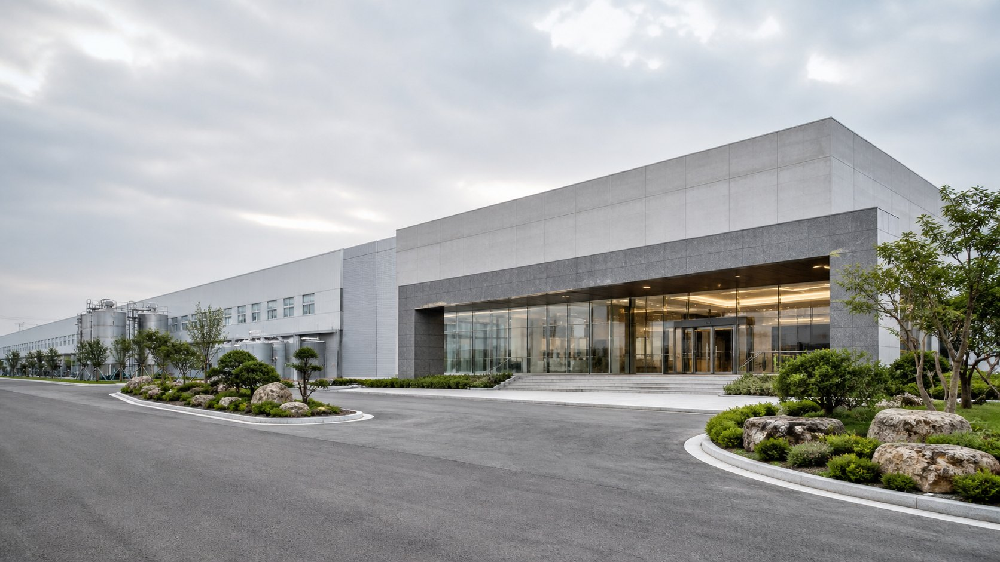

1988Start
담온식품의 시작
서울 외곽 20평 남짓의 떡 공방에서 가래떡과 절편을 만들며 시작했습니다. 새벽에 쪄서 아침에 납품하는 방식, 그때의 원칙이 지금도 남아 있습니다.

1988년 작은 떡 공방에서 시작해, 오늘은 떡·면·소스를 만드는 식품 제조 기업이 되었습니다. 이름처럼 정성을 담고 온기를 담는 일을 계속하고 있습니다.
식품은 결국 사람을 믿게 하는 일이라고 생각합니다. 담온식품은 그 믿음을 원료와 기록으로 쌓아 왔습니다.
좋은 원료를 고르는 일이
가장 오래 걸리는 일입니다.
쌀 한 톨을 고르는 기준은 단순합니다. 수분과 아밀로스, 그리고 이물이 없는지. 담온식품은 이 세 가지를 통과하지 못한 원료를 생산동에 들이지 않습니다. 원가가 조금 올라가도 기준을 먼저 보는 이유입니다.
반죽의 온도와 숙성의 시간은 자동화하지 않았습니다. 38년 동안 손끝으로 익힌 판단이 있고, 그 판단을 설비가 대신하지 못하는 부분이 있다고 믿기 때문입니다. 대신 모든 공정은 기록으로 남깁니다.
작은 공방에서 두 개의 생산동까지. 숫자보다 중요한 것은 그 사이에 쌓인 기준입니다.
서울 외곽 20평 남짓의 떡 공방에서 가래떡과 절편을 만들며 시작했습니다. 새벽에 쪄서 아침에 납품하는 방식, 그때의 원칙이 지금도 남아 있습니다.
급식 업체 세 곳과 정기 납품을 시작했습니다. 하루 1톤 생산 체계를 갖추고 위생 구역을 처음으로 분리했습니다.
전용 생산동을 지어 떡류 라인 세 개를 운영했습니다. 작업자와 설비의 동선을 나눈 첫 번째 공장이었습니다.
생면 설비와 소스 조리 라인을 도입했습니다. 떡에서 시작한 제품군이 한 끼의 구성으로 넓어졌습니다.
연간 8,600톤 생산능력과 콜드체인 물류동을 갖춘 제2공장을 열었습니다. 자주검사 주기를 2시간으로 앞당겼습니다.
공정 기록을 종이에서 디지털로 옮겼습니다. 원료 입고부터 출하까지 한 화면에서 추적할 수 있게 되었습니다.
180여 거래처와 함께 매일의 식탁을 만들고 있습니다. 변한 것은 설비이고, 변하지 않은 것은 기준입니다.
설비는 바뀌어도 원칙은 그대로입니다. 담온식품의 모든 판단은 이 세 줄에서 시작합니다.
국산 쌀과 냉장 원료만 씁니다. 가격표보다 원산지와 검사 성적서를 먼저 봅니다.
숙성 시간을 줄이지 않고, 모든 공정을 기록합니다. 보이지 않는 곳까지 같은 기준을 지킵니다.
급식·프랜차이즈·가정까지, 누구의 한 끼도 가볍게 여기지 않습니다. 그게 제조사의 책임이라 믿습니다.
생산 42명, 품질관리 9명, R&D 6명, 영업·물류 27명. 84명이 한 라인에서 같은 기준을 공유합니다.
| 조직 | 인원 | 역할 |
|---|---|---|
| 생산팀 | 42명 | 떡·면·소스 6개 라인 운영, 공정 기록 |
| 품질관리팀 | 9명 | 원료·공정·완제품 검사, 위생 점검 |
| R&D | 6명 | 레시피 개발, OEM/ODM 시제품 |
| 영업·물류 | 27명 | 납품 상담, 콜드체인 배송 관리 |
※ 인원 및 조직 구성은 포트폴리오 시안을 위한 예시입니다.

임직원
생산동 (제1·제2공장)
떡 3 · 면 2 · 소스 1
연간 생산능력
인증은 결과가 아니라 과정입니다. 담온식품은 매년 심사와 점검을 통해 관리 체계를 다시 확인합니다.
식품안전관리인증 기준에 따른 생산 공정 관리
식품안전경영시스템 요구사항 운영
국제 식품안전 시스템 인증 기준 운영
미국 식품의약국 시설 등록 기준 관리
인증 현황과 수상 내역은 실제 심사 결과에 따라 갱신됩니다. 거래처 상담 시 최신 인증서 사본과 검사 성적서를 제공합니다.
※ 본 페이지는 포트폴리오 시안으로, 표기된 인증·수상은 예시입니다.
샘플과 견적은 영업일 기준 1–2일 안에 안내드립니다.